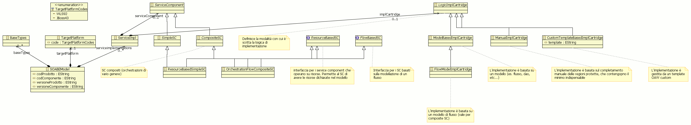
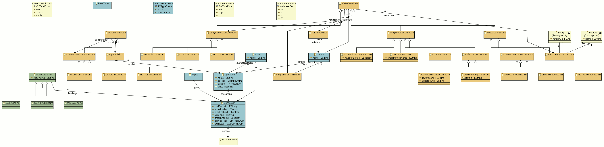
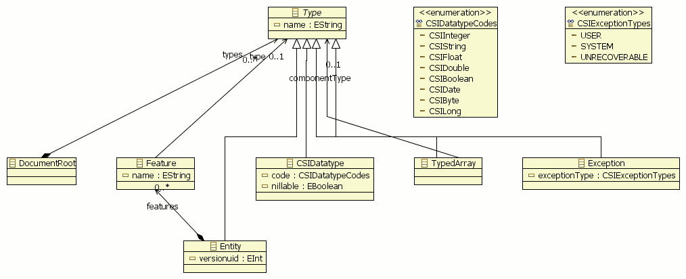

Servicegen - manuale di riferimento del metamodello
Diagramma complessivo
Nella figure seguenti è riportato l'insieme delle metaclassi che costituiscono il metamodello
servicegen, complete di:
- gerarchie di ereditarietà
- associazioni

Servicegen - diagramma metamodello

Servicegen - diagramma metamodello sezione definizione servizi

Servicegen - diagramma metamodello sezione definizione tipi
Documentazione di dettaglio
Documentazione metamodeldoc del metamodello SERVICEGEN.